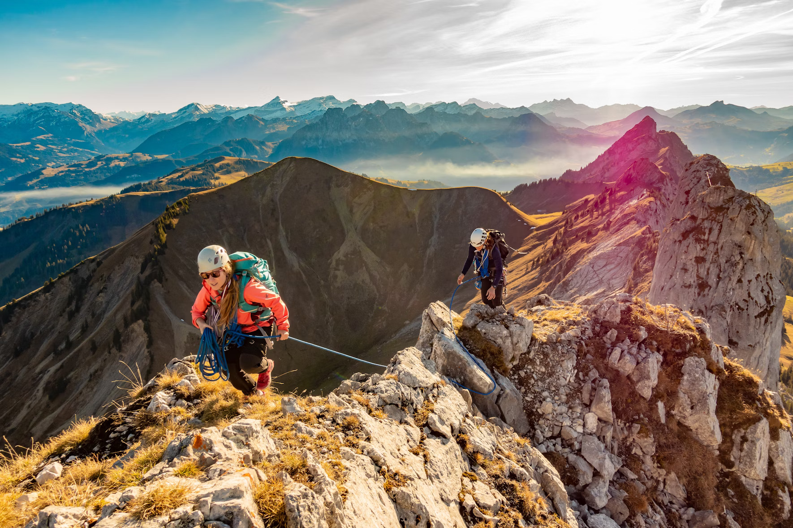

Rope-Based Activitites
Challenge yourself with our climbing and rope activities under the supervision of experienced instructors.
climbing



Learn climbing techniques and work towards reaching the top of our climibng wall.
Abseiling


Experience the excitement of descending safely using ropes and specialist climbing equipment.
Pole Climbing


Build confidence, balance and teamwork while completing our high-rope challenges.
Customer Reviews
The outdoor centre is the best place to go on summer and akso in winter. it is good for both individual and group activities, not only for adults but also for young people.
Very best experience at lochquarry outdoor centre. we keep coming to enjoy allt he outdoor activities with our kids next year too.
Learn more about water-based activities at Rope based activities